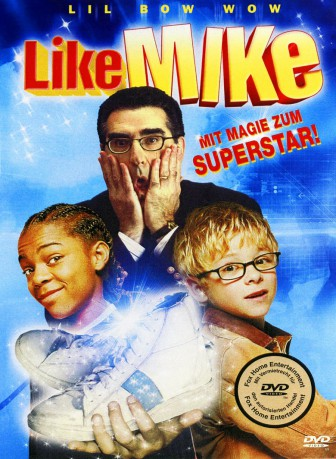
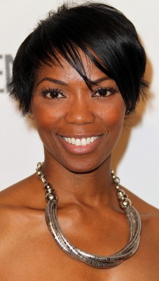

#8256 Like Mike
 
 IMDB-Wertung: 5.2 / 10
IMDB-Wertung: 5.2 / 10  Tomatometer: 57
Tomatometer: 57  Metascore: 0
Metascore: 0 
In einem Kinderheim in Los Angeles wohnt das Waisenkind Calvin Cambridge. Eines Tages bei einem Keks-Verkauf vor dem Los Angeles Knights Stadion begegnet er dem Coach der Knights. Der reserviert ihm ein paar Karten für das nächste Spiel. Am nächsten Tag findet er in einer Kiste geheimnisvolle Schuhe von Michael Jordan. Bei dem Spiel von den Knights hat er die Schuhe an, worauf er zufällig durch einen Wettbewerb gegen den Basketball-Spieler Tracey Reynolds antreten muss. Er gewinnt gegen Tracey durch eine merkwürdige Art. Er wird von den Knights gebeten, mit ihnen zu spielen. Zuerst gefällt das Tracey gar nicht, doch später kann er Calvin immer mehr leiden. Kurz vor dem Play-off-Spiel werden die Schuhe vom gemeinen Heimleiter gestohlen, doch er kann die Schuhe dank seinen Freunden wieder beschaffen. Obwohl die Schuhe kaputtgegangen sind, kann er das Spiel noch gewinnen. Später werden er und sein bester Freund Murph von Tracey adoptiert
Jahr: 2002
Dauer: 100 Minuten
FSK: 6
Land: USA Studio: Twentieth Century FoxTonspuren: DD5.1 - ,
Untertitel:
Auflösung: 720p (1278x720) Größe: 3358 MB
Genre: Komödie, Fantasy, Familie, Sport
Regisseur: John Schultz
Drehbuch: Michael Elliot
Soundtrack: Richard Gibbs
Darsteller:
- Shad Moss als Calvin
 Morris Chestnut als Tracy Reynolds
Morris Chestnut als Tracy Reynolds Jonathan Lipnicki als Murph
Jonathan Lipnicki als Murph- Brenda Song als Reg Stevens
 Jesse Plemons als Ox
Jesse Plemons als Ox- Julius Ritter als Marlon
 Crispin Glover als Stan Bittleman
Crispin Glover als Stan Bittleman Anne Meara als Sister Theresa
Anne Meara als Sister Theresa Robert Forster als Coach Wagner
Robert Forster als Coach Wagner Eugene Levy als Frank Bernard
Eugene Levy als Frank Bernard- Timon Kyle Durrett als Henderson
- Josef Cannon als Segretti
- Allen Iverson als Allen Iverson
- Steve Nash als Steve Nash
- Dirk Nowitzki als Dirk Nowitzki
- Gary Payton als Gary Payton
- David Robinson als David Robinson
- Chris Webber als Chris Wallace
- Pat Croce als Pat Croce
- Rich Eisen als Rich Eisen
- Ahmad Rashad als Ahmad Rashad
- Hannah Storm als Hannah Storm
 Reginald VelJohnson als Mr. Boyd
Reginald VelJohnson als Mr. Boyd- Valarie Pettiford als Mrs. Boyd
- Sandra Prosper als Janet
-  Vanessa Williams als Pharmacist
 Basil Wallace als Drill Sergeant Dad
Basil Wallace als Drill Sergeant Dad- Christine Mitges als Musical Theatre Mom
- Stephen Holland als Musical Theatre Dad
 Fred Armisen als New Age Dad
Fred Armisen als New Age Dad Julie Brown als New Age Mother
Julie Brown als New Age Mother- Corey Holcomb als Trucker Dad
 Tucker Smallwood als Mr. Reynolds
Tucker Smallwood als Mr. Reynolds Rick Ducommun als Dad Outside Arena
Rick Ducommun als Dad Outside Arena Sybil Azur als Cheerleader #1
Sybil Azur als Cheerleader #1- Diana Carreno als Cheerleader #3
 Faune Chambers Watkins als Cheerleader #4
Faune Chambers Watkins als Cheerleader #4- Karen Elmore als Cheerleader #5
- Staci B. Flood als Cheerleader #6
- Stacey Harper als Cheerleader #7
 Sandra McCoy als Cheerleader #8
Sandra McCoy als Cheerleader #8 Sarah Christine Smith als Cheerleader #10
Sarah Christine Smith als Cheerleader #10- Janelle Pierzina als Cheerleader #13
- Jon Edwin Wright als Assistant Coach #1
- Dwayne Foster als Assistant Coach #2
- Charlie Schultz als Cab Driver
- Ted Borodaeff als Basketball fan (uncredited)
- Susan Chuang als Hallmark Mom (uncredited)
- Peter Cornell als Peter Cornell (uncredited)
- Joel Ewing als Raptor's Assistant Coach (uncredited)
Datei: X:\2002\Like Mike (2002, FSK6, 1278x720).mkv seit 14.02.2018
Festplatte: HD 1996-2002
 Es gibt insgesamt 93 Filme in der Gruppe '2002'
Es gibt insgesamt 93 Filme in der Gruppe '2002'